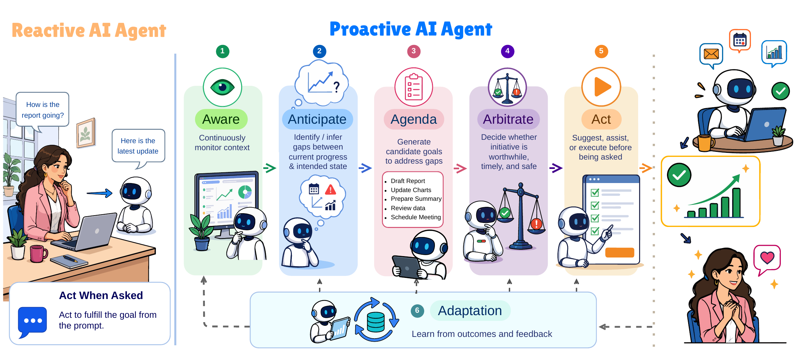
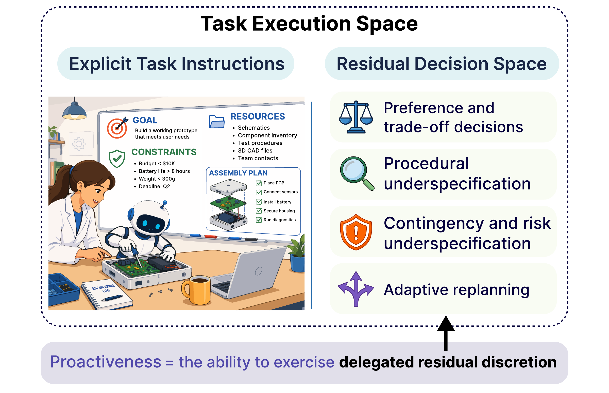
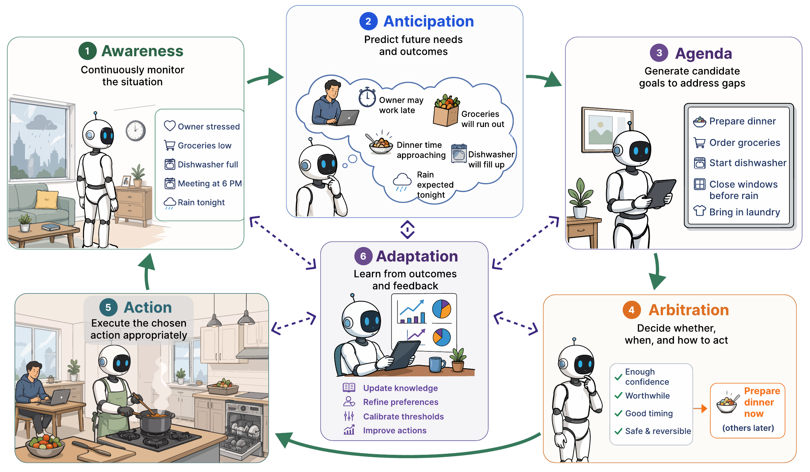
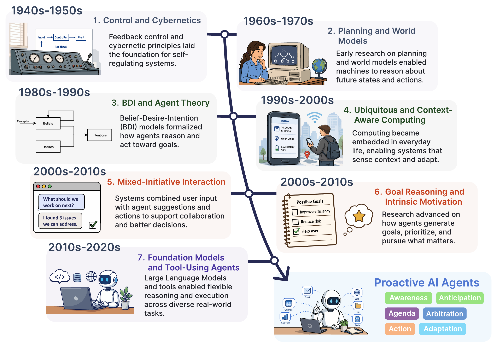

Proactive AI for
Superintelligent Agents
From waiting for instructions to discovering worthwhile work.

01 · Definition
Initiative lives in what the instruction leaves open.
Proactiveness is the capacity to exercise delegated discretion within a task's residual decision space, without a new instruction for each decision.
It includes resolving trade-offs, filling procedural gaps, handling contingencies, and replanning while respecting the task's stated goals and constraints.

02 · Framework
Six capacities turn context into calibrated initiative.
Awareness and anticipation reveal useful gaps. Agenda formation creates commitments. Arbitration decides whether intervention is warranted. Action intervenes within authority. Adaptation learns from the result.

03 · Foundations
A long history of increasingly open-ended initiative.
Proactive agency draws from control and cybernetics, planning and world models, agent theory, ubiquitous computing, mixed-initiative interaction, and goal reasoning.

04 · Evaluation
Evaluating proactiveness requires evidence beyond task completion.
Proactive systems must be evaluated at three complementary levels. A successful intervention can still be poorly timed, unjustified, or burdensome.
05 · Application map
Initiative and authority evolve on different axes.
More capable systems are not automatically granted more authority. Each domain is limited by a different mix of verification, feedback, governance, and evaluation.
06 · Representative works
Compare the survey’s representative works across the 6A pipeline.
These are the works the survey selects for each application domain and analyzes in depth. Search its application tables, narrow by domain, and compare how each one senses, anticipates, gates, acts, and adapts.
| System | Domain | Awareness | Anticipation | Arbitration | Action | Adaptation | Deploy. |
|---|
07 · Abstract
A unified view of proactive agency.
Loading citation…